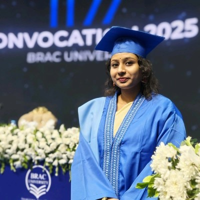

Hello. I'm Chaity Rani Ghosh
Researcher in HCI, HAI, ML and Computer Vision.
Computer Science & Engineering graduate from BRAC University and Student Researcher at ELITE Research Lab. Specialized in constructing trustworthy deep learning models, multimodal diagnostic pipelines, and transparent medical decision support architectures.

Background & Academic Mission
I am a Computer Science and Engineering graduate from BRAC University, now conducting research at the master's level while serving as a Student Researcher at ELITE Research Lab. My academic focus lies at the intersection of explainable AI (XAI) and human-AI interaction (HAI)—from synthesizing multimodal clinical diagnostics (radiographs, EHR notes, knowledge graphs) to studying how humans develop cognitive and emotional trust in conversational AI.
The core motivation across all my investigations is simple: how can we design machine learning architectures that are not only statistically accurate, but explainable, accountable, and reliably aligned with human experts? I am currently preparing applications for PhD programs in Computer Science to continue this research agenda.
Tools & Methodologies
A comprehensive technical toolkit leveraged across machine learning pipelines, explainable AI architectures, systems engineering, and scientific publications.
View My ProjectsLanguages
ML, Deep Learning & Vision
Systems, Networking & Tools
Academic Standards & HCI
Research & Work Experience
A timeline of academic research appointments, engineering roles, and university teaching assistantships.
Student Researcher
- Investigating Human-AI Interaction (HAI) utilizing Natural Language Processing (NLP) and Large Language Models.
- Designing evaluation protocols to assess usability, transparency, and calibrated user trust in AI decision interfaces.
Technology Intern
- Conducted functional testing, debugging, and systematic technical documentation of enterprise software tools.
- Assisted in maintenance, quality assurance, and deployment of internal technology systems and services.
Undergraduate Teaching Assistant
- Delivered problem-solving tutorial sessions for Numerical Methods (CSE330) and Complex Variables & Fourier Analysis (MAT215).
- Mentored students through complex theoretical derivations, helping elevate cohort exam scores by 15%.
- Evaluated and provided detailed technical feedback on 300+ assignments per academic term.
Academic Journey
Building a strong theoretical foundation to fuel innovative research and engineering solutions.
Master of Science
Bachelor of Science
Featured Works
Open-source implementations, benchmarks, and machine learning pipelines.
Coronary Heart Disease Risk Predictor
Clinical Predictive Modeling & Risk Stratification System
Clinical predictive modeling tool utilizing a hybrid ensemble to predict 10-year risk of coronary disease with automated hyperparameter tuning and cross-validation.
Handwritten Bangla Name Recognition & XAI
Deep Learning Recognition & Explainability Pipeline
Computer vision transfer learning pipeline on custom self-curated dataset, featuring ResNet50 (83.89% test accuracy), Grad-CAM heatmaps, and local LIME explanations.
Healthy Habits — Diet Planning Platform
Interactive Nutrition Tracker & Caloric Planner
Full-stack MVC web platform enabling users to track, schedule, and plan nutrition with relational schema validation and caloric calculators.
Diagnostic Diabetes Predictor
Clinical Metabolic Marker Classification Engine
Supervised classification pipeline comparing logistic regression, SVM, and random forests on clinical metabolic markers.
Publications & Manuscripts
Peer-reviewed conference proceedings, journal papers under review, and preprints.
Hybrid Q-Learning with VLMs Reasoning Features
2025 3rd International Conference on Artificial Intelligence and Machine Learning Applications (AIMLA), IEEE.
Time-Sliced Round Robin (TSRR) Scheduling for Flow-Aware Load Balancing in Software Defined Networks
Under Review at Alexandria Engineering Journal (Elsevier).
Introduces an adaptive traffic scheduler for Software Defined Networks combining machine learning flow classification with dynamic time slicing, achieving 91% traffic classification accuracy, 85% jitter reduction, and 89% lower packet loss over static baselines.
Explainable Multimodal Chest X-ray Diagnosis Using Clinical Text and Medical Knowledge Graphs with VLM-based Reasoning
Manuscript / Working Paper
Multimodal fusion architecture coupling DenseNet121 visual features, clinical BERT text embeddings, and structured medical graph priors, interpreted using Grad-CAM heatmaps.
Machine Learning-Based Coronary Heart Disease Prediction: A Comprehensive Ensemble Approach
Manuscript / Working Paper
Ensemble framework integrating Decision Trees, Random Forests, and XGBoost with automated feature selection for coronary risk prediction.
Being Heard Without Being Connected: Emotional Dependence on AI Chatbots and Its Perceived Implications for Mental Well-being among University Students
Manuscript / Working Paper
Mixed-methods empirical study assessing anthropomorphic attachment, conversational reliance, and ethical implications of conversational LLMs.
Robust Handwritten Bangla Human Name Recognition Using Deep Learning, Ensemble Models and Explainable AI
Manuscript / Working Paper
Transfer learning framework evaluated on a curated handwritten benchmark, achieving 83.89% test accuracy with ResNet50 and audited via LIME and Grad-CAM.
An SDN-based Approach Using RYU Controller for Load Balancing and Performance Evaluation in Hybrid Networks with Machine Learning Algorithms
Bachelor's Thesis, Dept. of Computer Science & Engineering, BRAC University, 2025.
Honors & Certifications
Dean's List & Vice Chancellor's List
Recognized for outstanding academic merit in 7 semesters at BRAC University.
High Distinction Graduate
Graduated with CGPA 3.77 / 4.00, B.Sc. in Computer Science & Engineering.
Understanding Machine Learning
DataCamp (2025) — Machine learning paradigms, validation, and optimization.
Introduction to SQL
DataCamp (2025) — Relational querying, complex joins, and aggregations.
Manuscript Under Review
TSRR scheduling architecture at Alexandria Engineering Journal (Elsevier).
Let's Discuss Research or PhD Opportunities
I am actively exploring PhD openings and research collaborations in Multimodal Machine Learning, Medical AI, and Explainability. Feel free to reach out directly: